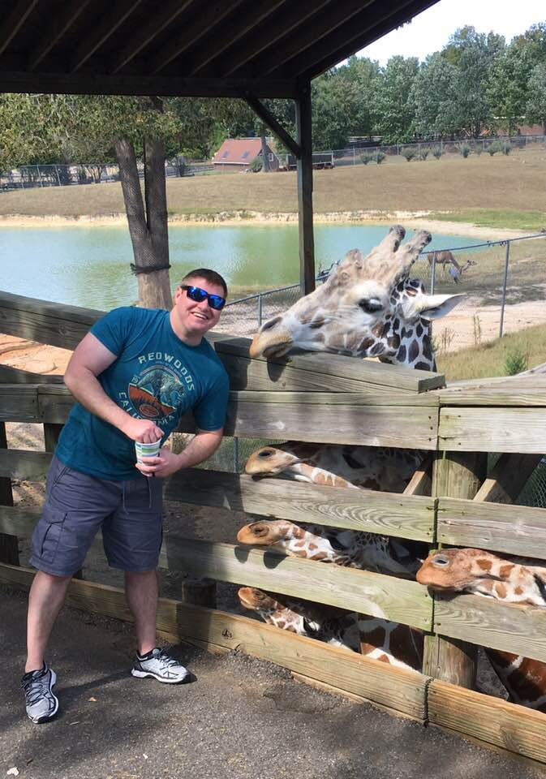
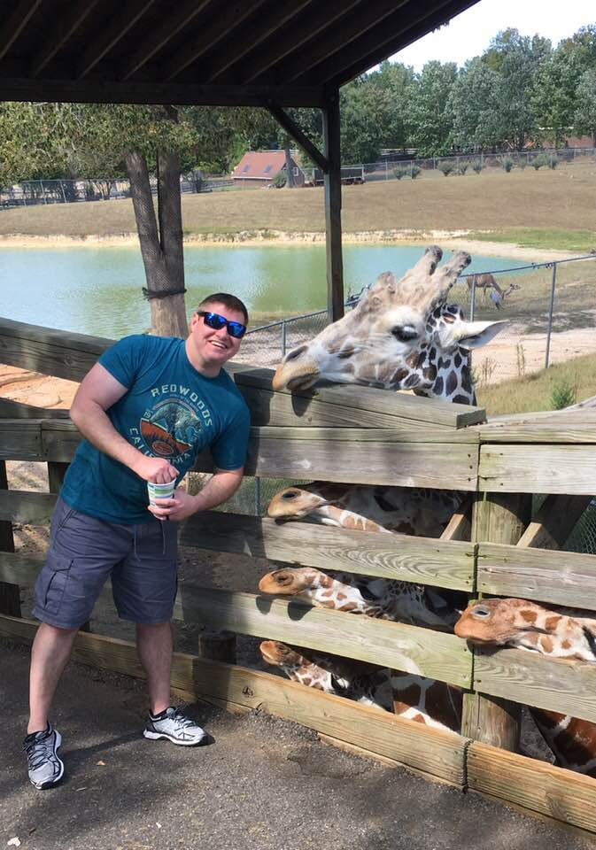

About Me
I grew up in a small town in Virginia. I was lucky enough to have great adventures with great friends. After high school I joined the Air Force as an aircraft engine mechanic. 7 years of being intrigued by technology in the Air Force told me to pursue a career in IT.
Things I Like
Scuba Diving: My favorite places to scuba dive are Maui and Grand Cayman
Boating: I've been going out on boats since before I could talk
Camping: I learned camping and wilderness survival in the Boy Scouts
Local Weather
Temperature
Description
Location
Local Campsites Near You
Local Scuba Diving Locations Near You
 
